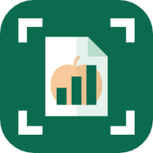

Skanna fakturor, kvitton och Z-rapporter. Kontrollera. Klart – med moms och rapporter för varje månad.
Appen finns för Android-mobiler och surfplattor med Android 7.0 eller senare och kamera. Installationen tar ett par minuter.
En ny version installeras på samma sätt och läggs över den gamla; alla uppgifter finns kvar. Ta aldrig bort appen före en uppdatering.
Första gången appen startar går den igenom fem korta steg. Allt kan ändras senare under Inställningar. Har du använt appen förut? Tryck Återställ från säkerhetskopia på första sidan, så kommer allt tillbaka utan stegen.
| Steg | Vad du gör |
|---|---|
| Företag | Företagsnamn, företagsform, organisationsnummer och adress. Med dem känner appen igen ditt namn på papperen, så att det aldrig blir leverantör. |
| Kategorier | De kolumner du vill se i månadsrapporten: t.ex. Mat, Avhämtning, Dryck, Tobak. Lägg till, byt namn eller dra för att ändra ordning. |
| Momssats | Välj moms för varje kategori: 25, 12, 6 eller 0 %. Samma vara kan ha olika moms beroende på hur den säljs (äta på plats eller ta med). |
| Z-rapportens rader | Raderna som står på Z-rapporten, och vilken kategori varje rad registreras som, t.ex. "Drycka avhämtning" → Avhämtning. En rad med samma namn som en kategori behöver inte läggas till. Du kan hoppa över steget; appen frågar när den möter en ny rad. |
| Klart | En sammanfattning. Tryck på Klar. |
1 Dra i ⋮⋮ för att flytta en kolumn i månadsrapporten.
2 Tryck på momssatsen för att byta den.
3 Stora eller små bokstäver spelar ingen roll: "ÖL" på Z-rapporten blir Öl.
Längst ner finns fem flikar. Kugghjulet uppe till höger öppnar Inställningar.
| Översikt | Månadens försäljning och utgifter jämfört med förra månaden, ett diagram för sex månader, försäljning per kategori (de fem största; Visa alla visar resten), beräknad moms och de senaste registreringarna. |
| Försäljning | Z-rapporter och onlineförsäljning, dag för dag. |
| Skanna | Den gröna knappen i mitten. Här börjar allt nytt. |
| Utgifter | Fakturor och kvitton med sökfält, och vad som återstår att betala. |
| Rapporter | Månad, år, jämförelse och resultat – som PDF, Excel eller utskrift. |
1Att betala 2Månadens siffror med ändring mot förra månaden 3Skanna
Tryck på Skanna i menyn och sedan på den stora gröna knappen Skanna faktura eller Z-rapport längst ner. Appen känner själv igen vilket slags papper det är.
1Gul ram. Appen ritar en gul ram runt pappret den ser, som en hjälp när du siktar.
2Vattenpass. Bubblan blir grön när telefonen hålls rakt över pappret. Den är bara en hjälp.
3Ta bilden när knappen blir grön. Långa kvitton: välj I delar och ta flera bilder uppifrån och ner med lite överlapp. Tryck Klar.
Efter varje bild visas den med fyra gula hörn. Dra hörnen till pappersets hörn – ett förstoringsglas visar var du sätter dem. Det som ligger utanför ramen, t.ex. papper under, tas inte med, och pappret rätas upp. Tryck Klar, eller Ta om för en ny bild.
Efter skanningen visar appen vad den läste. Titta på varje fält och jämför med pappret.
| Säker | Läst och kontrollerat mot summorna på pappret. |
| Kontrollera | Troligen rätt, men titta extra. |
| Osäker | Appen gissar eller hittade inget. Rätta vid behov. |
Ändra ett värde: tryck direkt i fältet och skriv. Under datum och summa visas ibland andra värden från pappret som knappar – tryck för att välja.
Läst text: överst finns all text appen läste. Kopiera avläst text kopierar den.
Kontroll längst ner räknar: stämmer netto + moms med summan? Är momsen rimlig?
Tryck Godkänn och spara när allt stämmer.
Under Betalning föreslår appen om pappret redan är betalt (kvitto, kortbetalning, stämpel BETALD) eller ska betalas. Du bekräftar alltid själv.
Slå på Kreditnota när leverantören krediterar. Beloppen blir minus och dras av från utgifterna och den ingående momsen.
Har fakturan flera momssatser (t.ex. 12 % och 25 %) visas en rad per sats. Saknar pappret moms, t.ex. ett inbetalningskort, slå på Ingen moms under fältet Moms. Appen gör det själv när pappret säger att det saknar moms; annars räknas momsen som saknad.
Välj vad fakturan gäller, t.ex. Varuinköp, Lokalhyra eller El. Samma leverantör får samma typ föreslagen nästa gång. Typen visas överst på fakturans sida och används i resultatrapporten och SIE-filen.
Skanna Z-rapporten från kassan varje dag. Appen hittar datumet (Från-datumet), raderna per varugrupp och totalen.
Tryck Skanna → Onlineförsäljning och fotografera partnerns betalningsbesked eller självfaktura. Appen läser utbetalningsdatum, belopp och moms.
När pappret också innehåller partnerns faktura för avgifter och provision delar appen upp det: först registreras försäljningen, sedan öppnas avgiftsfakturan som en vanlig utgift.
Saknas pappret, eller går det inte att läsa? Tryck Skanna → Fyll i själv och välj faktura, Z-rapport eller onlineförsäljning.
För mycket svårlästa papper finns en knapp som skickar bilden till Googles AI-tjänst för en andra läsning. Den är av från början, kräver en egen nyckel (Inställningar → Förbättrad analys) och frågar alltid innan något skickas.
Skanna-fliken, under "Annat sätt"
Bilaga i e-posten → Dela
1Onlineförsäljning 2Faktura som fil eller bilaga 3Fyll i manuellt
Flikarna Försäljning och Utgifter visar en månad i taget. Byt månad med pilarna.
Kortet Att betala listar obetalda fakturor med bankgiro och OCR. Den lila rutan listar fakturor som saknar uppgifter.
Före och på förfallodagen (Inställningar → Påminnelser).
| Månad | En rad per dag: försäljning per kategori, utgifter och moms. Tryck på en dag för detaljer. |
| År | Varje månad under året. Tryck på en månad för att öppna den. |
| Jämför | Två år månad för månad: försäljning, utgifter eller moms, med procent. |
| Resultat | Intäkter, kostnader per typ och resultatet, utan moms, för en månad eller ett år. En lila ruta överst visar fakturor att rätta. |
Varje rapport har knapparna PDF, Excel och Skriv ut. Excel-filen öppnas direkt i Excel och Google Kalkylark.
På fliken Resultat finns SIE-fil till redovisaren. Välj Skicka med e-post: e-posten öppnas med filen bifogad och ämnet "SIE-fil [ditt företag], [period]". Eller välj Spara på telefonen. Filen läses av Fortnox, Visma, Bokio och de flesta redovisningsbyråer.
Allt sparas i telefonen. Försvinner telefonen, eller rensas appens data, är uppgifterna borta – om du inte har en säkerhetskopia.
Sedan sparas en krypterad kopia efter varje ändring (högst en per dag); de tre senaste behålls, även om appen tas bort.
Skicka kopia öppnar delningsmenyn: välj Google Drive, OneDrive, Box eller e-post, t.ex. en gång i månaden.
Installera appen, gå till Säkerhetskopiering → Importera säkerhetskopia, välj den senaste filen (.bkp eller en ZIP-fil med den) och skriv lösenordet. Appen visar vad kopian innehåller innan något ersätts.
Inställningar → Lagring visar hur mycket plats appen tar. Frigör utrymme tar bort tillfälliga filer – inga belopp eller registreringar.
1Kugghjulet uppe till höger, på alla flikar, öppnar Inställningar.
| Del | Vad den gör |
|---|---|
| Företag | Namn, företagsform, organisationsnummer, adress, räkenskapsårets startmånad och andra namn företaget har på papper. |
| Aktivering | Visar om appen är aktiverad och till när. Här skrivs en ny kod in. |
| Försäljningskategorier | Namn och momssats per kategori. Dra för att ändra ordning. |
| Fält på Z-rapport | Vad varje rad på Z-rapporten registreras som. |
| Behåll originalbilder | Av: bilden tas bort när du godkänt. Spara papperen, så behövs inga bilder i appen. |
| Lagring | Platsen appen tar, och Frigör utrymme. |
| Påminnelser | Avisering före och på förfallodagen. Välj hur många dagar före. |
| Säkerhetskopiering | Automatisk kopia, kopia till molnet, export och import. |
| Inlärda fält | Var varje leverantör skriver summa, moms, nummer och datum – inlärt när du rättar. Kan tas bort. |
| Historik | Alla registreringar med status. |
| Förbättrad analys | Valfri AI-läsning online. Av som standard. |
| Integritet | Vad appen sparar och var. |
| Användarguide | Den här guiden som PDF, öppnas i telefonens PDF-läsare. |
Tryck i fältet och rätta, eller välj ett annat värde bland knapparna under fältet. Vid många fel: Skanna igen i bättre ljus och med hela pappret i bild.
Fyll i organisationsnummer och adress under Inställningar → Företag, och svara "Mitt företag" när appen frågar. Då lär den sig.
Appen varnar för dubbletter innan du sparar. Har det ändå hänt: öppna registreringen och ta bort den.
Raderna och totalen på Z-rapporten stämmer inte. Öppna den och kontrollera varje rad mot pappret.
Ja. Installera appen, importera den senaste säkerhetskopian och skriv in aktiveringskoden.
Nej. Allt ligger krypterat i telefonen och i dina säkerhetskopior. Ingenting skickas utan att du väljer det.
Appen installeras utanför Google Play, därför frågar Android. Ladda bara ner den via QR-koden på kortet.